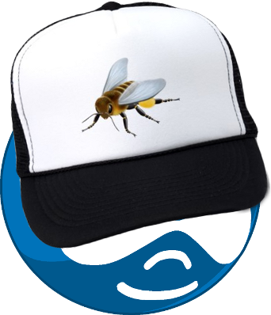
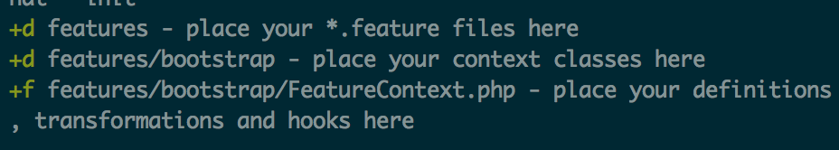
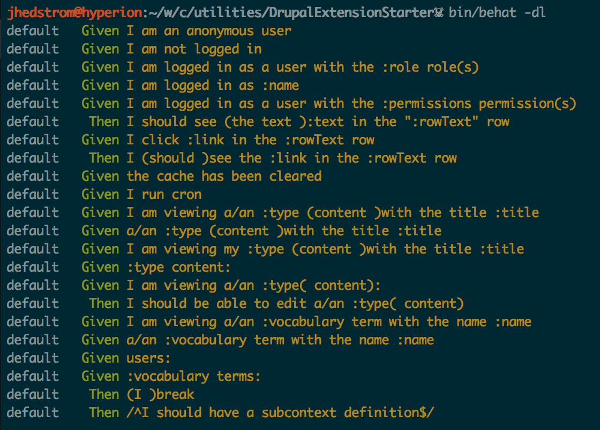

| z, ? | toggle help (this) |
| space, → | next slide |
| shift-space, ← | previous slide |
| b | blank screen |
| d | toggle debug mode |
| ## <ret> | go to slide # |
| c, t | table of contents (vi) |
| f | toggle footer |
| g | toggle follow |
| r | reload slides |
| n | toggle notes |
| p | run preshow |
| P | toggle pause |
| s | choose style |



Hic sunt dracones
package org.openqa.selenium.example;
import org.openqa.selenium.By;
import org.openqa.selenium.WebDriver;
import org.openqa.selenium.WebElement;
import org.openqa.selenium.htmlunit.HtmlUnitDriver;
public class Example {
public static void main(String[] args) {
// Create a new instance of the html unit driver
// Notice that the remainder of the code relies on the interface,
// not the implementation.
WebDriver driver = new HtmlUnitDriver();
// And now use this to visit Google
driver.get("http://www.google.com");
// Find the text input element by its name
WebElement element = driver.findElement(By.name("q"));
// Enter something to search for
element.sendKeys("Cheese!");
// Now submit the form. WebDriver will find the form for us from the element
element.submit();
// Check the title of the page
System.out.println("Page title is: " + driver.getTitle());
}
}
Given I am at "http://www.google.com"
When I enter "Cheese!" for "Search"
And click "Google Search"
Then I should see the text "results"
Feature: Engage prior to registration
In order engage potential users
As an inspired fan of the "Little Boy" movie
I need be able to select calls to action without email verificationScenario: Select calls to action form remembers user without signin
Given I am not logged in
When I follow "Let's get started!"
Then I can select calls to action I am interested in Given: Put the system in a known state
When: Act on the system
Then: Describe the result of the actionFeature: Engage prior to registration
In order engage potential users
As an inspired fan of the "Little Boy" movie
I need be able to select calls to action without email verification
Scenario: Multistep signup form remembers user without signin
Given I am not logged in
When I follow "Let's get started!"
Then I can select calls to action I am interested in
1 scenario (1 failed)
3 steps (3 passed, 0 failed)
0m0.545sFeature: Engage prior to registration
In order engage potential users
As a site visitor
I need be able to start the multi-step signup process without email verification
Scenario: Multistep signup form remembers user without signin
Given I am not logged in
When I follow "Let's get started!"
Then I can select calls to action I am interested in
No calls to action found on the page.
1 scenario (1 failed)
3 steps (2 passed, 1 failed)
0m0.545sSeparates the concept of testing web applications from the actual browser used.
Provides language and corresponding step-definitions for testing web applications.
Provides language and corresponding step-definitions for testing web applications.
Given I visit "http://google.com"
When I fill in "Drupal" for "Search"
And press "Search"
Then I should see the link "http://drupal.org"Given I am logged in as a user with the "administrator" role
When I am at "node/add"
Then I should see the link "Article"
And I should see the link "Basic page"Sample composer.json file
{
"require": {
"drupal/drupal-extension": "~3.0"
},
"config": {
"bin-dir": "bin/"
}
}You'll need to install Composer (http://getcomposer.org). I install
it globally so I can just call composer.
$> composer installSample behat.yml file
default:
suites:
default:
contexts:
- FeatureContext
- Drupal\DrupalExtension\Context\DrupalContext
extensions:
Behat\MinkExtension:
goutte: ~
selenium2: ~
base_url: http://d7.devl/
Drupal\DrupalExtension:
blackbox: ~
api_driver: "drupal"
drupal:
drupal_root: "~/path/to/drupal-7"Initialize custom FeatureContext and directory structure.
$> bin/behat --init
<?php
use Behat\Behat\Tester\Exception\PendingException;
use Drupal\DrupalExtension\Context\RawDrupalContext;
use Behat\Behat\Context\SnippetAcceptingContext;
use Behat\Gherkin\Node\PyStringNode;
use Behat\Gherkin\Node\TableNode;
/**
* Defines application features from the specific context.
*/
class FeatureContext extends RawDrupalContext
implements SnippetAcceptingContext {
/**
* Initializes context.
*
* Every scenario gets its own context instance.
* You can also pass arbitrary arguments to the
* context constructor through behat.yml.
*/
public function __construct() {
}
}List of available step definitions
$> bin/behat -dl
DrupalContext Content, Users, and TaxonomyMinkContext Extends the...Mink ExtensionMessageContext Drupal success/warning/error messagesMarkupContext Verify markupDrushContext Use drush commands in stepsProvide multiple ways of manipulating Drupal.
These are not Behat-specific!
The maillog module provides step-definitions for checking if emails are sent.
Then 1 email should be sent:
| To | Subject |
| test@example.com | Account details for Test User at Site Name |This is very useful, even if it isn't BDD, for testing things like complex Rules.
Feature: Related content
In order to read more interesting articles
As a reader
I need to see related articles to the one I'm readingsuites:
integration:
tags: "@integration"
...
frontend:
tags: "@ui"$> bin/behat --profile=integrationThe tools allow for both.
@api
Feature: Basic authenticated user functionality
In order to prove that this site is functional for logged in users
As a user
I need to be able to edit my account
And I need to be able to log out of the site
Background:
Given I am logged in as a user with the "authenticated user" role
Scenario: Authenticated user edit their account
Given I am at "/"
When I click "My account"
Then I should see the link "Edit"
Scenario: Authenticated user can see a logout link
When I visit "/"
Then I should see the link "Log out" Druplicon beehat by jessehs
Druplicon beehat by jessehs
Drupal Extension Documentation BDD - A Large Scale Drupal Guide Slides available at http://jhedstrom.github.com Slides powered by https://github.com/puppetlabs/showoff